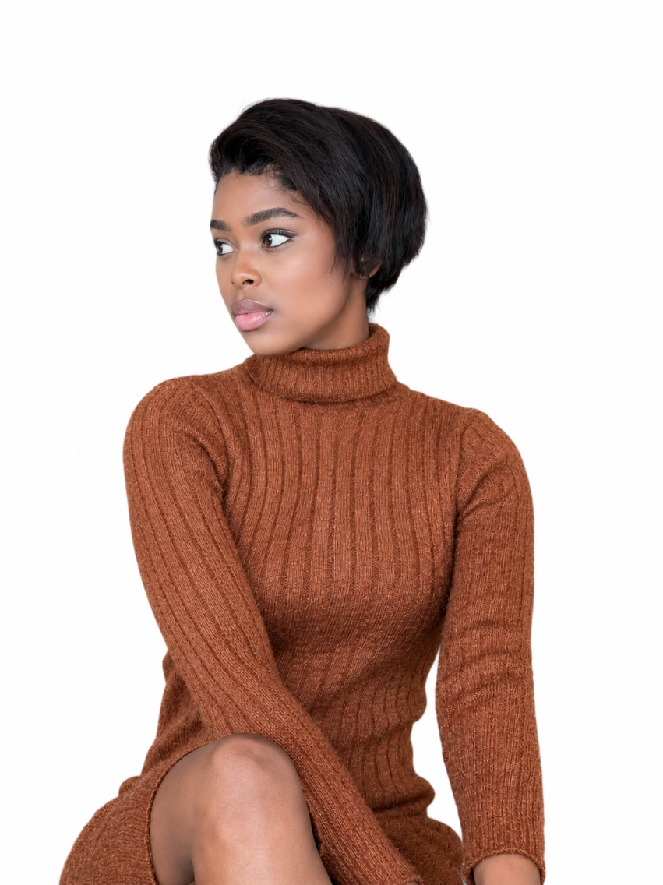
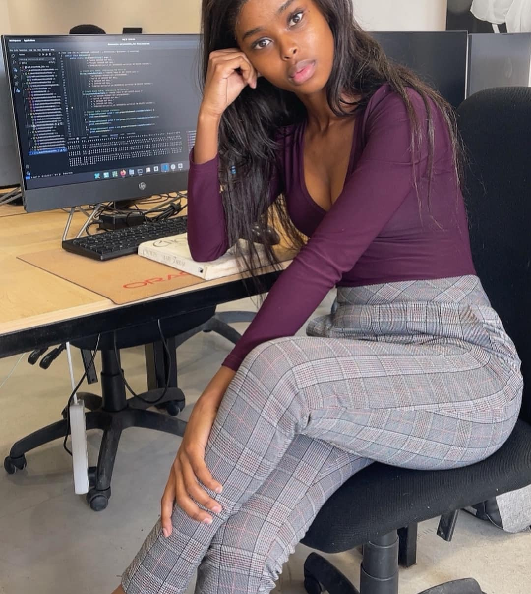
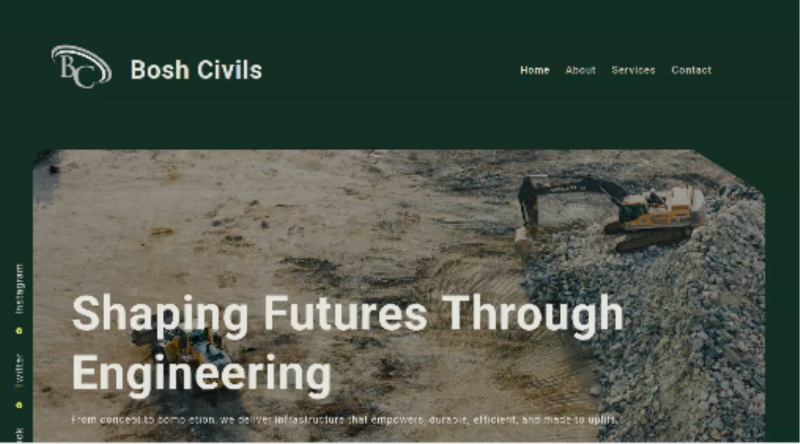
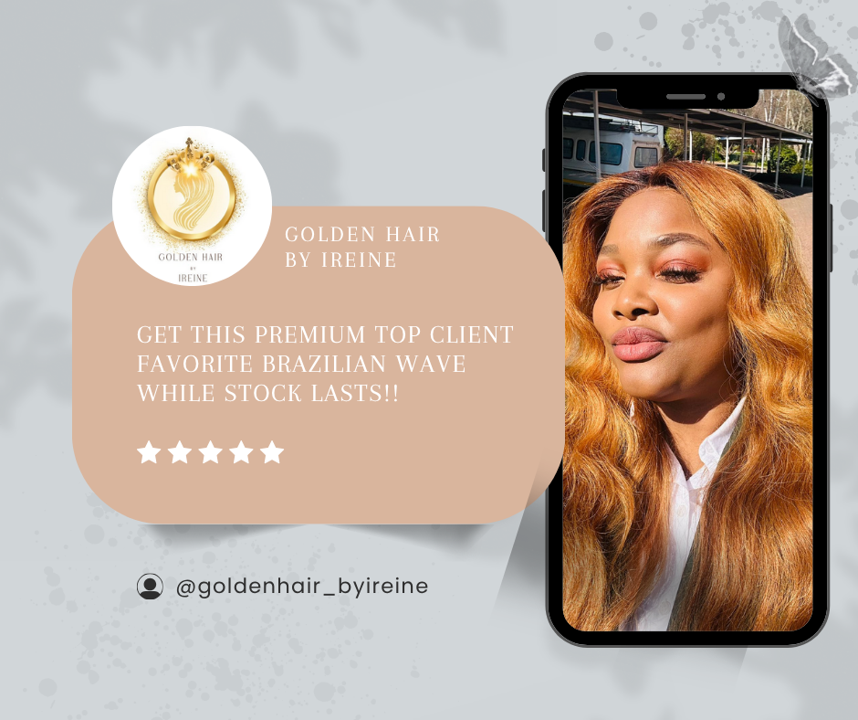
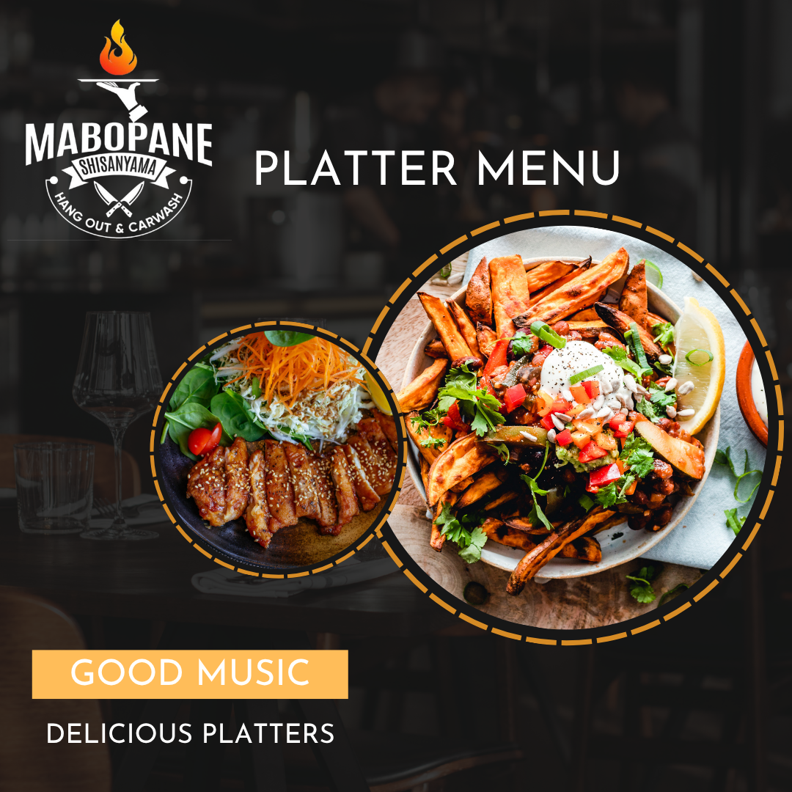
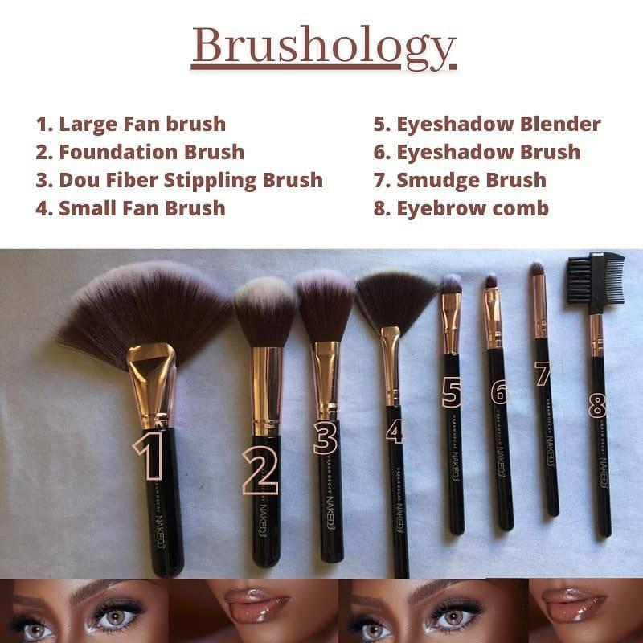

Social media
Content calendars, platform strategy, scheduling and community engagement that keep your brand consistent.
I shape thoughtful content, clear communication and people-first opportunities that help brands and individuals move forward.


My freelance journey began with a simple belief: start with what you have, right where you are.
I started freelancing during the third year of my Public Relations studies, working with start-up companies that needed someone to believe in their vision and help them show up professionally. Those first projects taught me to listen deeply, work resourcefully and treat every small business dream with care. What began as a way to apply what I was learning became a purpose: helping brands communicate with confidence, connecting people to opportunity and showing young professionals that their existing skills can become a meaningful new income stream.
Today, I bring together social media, communication, technology and people solutions to create work that is thoughtful, useful and grounded in real human needs.
Considered creative work and people-first solutions that help brands and individuals grow.
Content calendars, platform strategy, scheduling and community engagement that keep your brand consistent.
Campaign concepts, captions, message mapping and clear copy designed to connect with the right audience.
Polished social graphics, campaign assets and responsive websites that make a strong first impression.
Beyond HR support, I connect businesses with freelancers for short-term projects and help employed young people build freelance income from the skills and resources they already have—starting where they are.




Website, campaign and content design across engineering, beauty and hospitality.
Started during my third year of study, helping start-ups build their voice through social media, campaigns and digital design.
Built technical fluency across front-end development, digital systems and cloud foundations.
Supported social strategy, message mapping, research, content planning and impact-led storytelling.
Managed digital channels, created photography and helped teachers integrate technology into learning.
Diploma in Public Relations Management, focused on communication, media and PR.
Available for social media, content, communication and selected website projects.
Start a conversation ↗